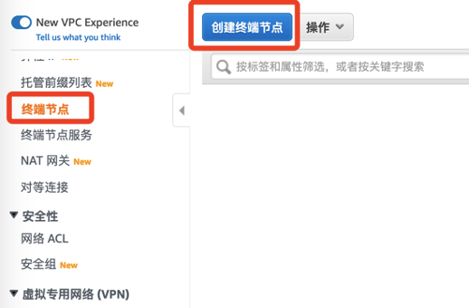

要完成本章节的实验，大概需要10分钟。
如果在我们的文字描述和截图中均未涉及的选项或者页面，取默认值即可。
本实验模拟产生流数据。
登录准备阶段部署的EC2，保存如下代码到ec2-user的home目录下
然后执行如下代码开始给Kinesis Data Streams流平台发送模拟数据（这个2020-09-04在系统内是个交易日期，方便后续作为关键字查找，没有特殊的含义）
cd ~
sh lab1.sh kds-lab1 2020-09-04 &
系统会生成一个日志文件，查看同一个目录下的日志文件，出现如下字样表示启动成功
点击控制台右上角的账号下拉框，可以看到对应的账号，如 此处为
519201465192
因为S3桶是全球唯一的命名，所以为了区分，我们采用如下的方式命名S3存储桶，如下所示
lab-519201465192-sin-com
打开EC2客户端，使用如下命令创建S3桶（也可以直接在控制台创建，此处略）
aws s3 mb s3://lab-519201465192-sin-com/
aws s3 ls
如下
我们会发现有两个S3的存储桶（因为有一个是之前部署EMR集群的时候的日志桶）。
为了方便内网访问S3存储桶，此处我们配置S3终端节点。登录并打开VPC控制台，往下拉选择左边的终端节点： 
选中S3（在搜索框里面输入s3并回车即可搜索），选择对应VPC（此处我们只有一个默认VPC）和路由表：
其他默认，点击“创建终端节点”即可。